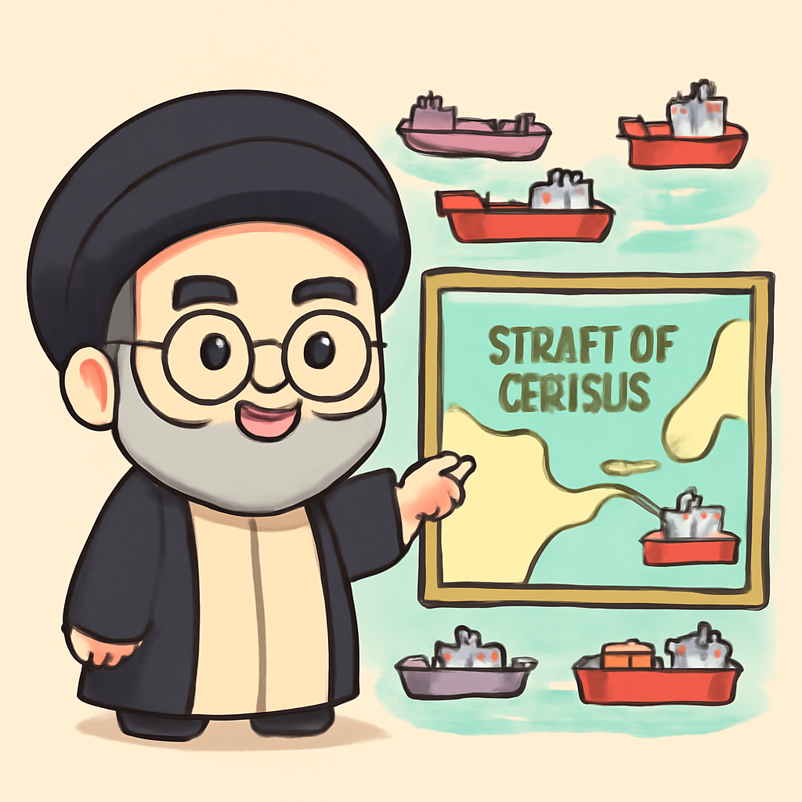
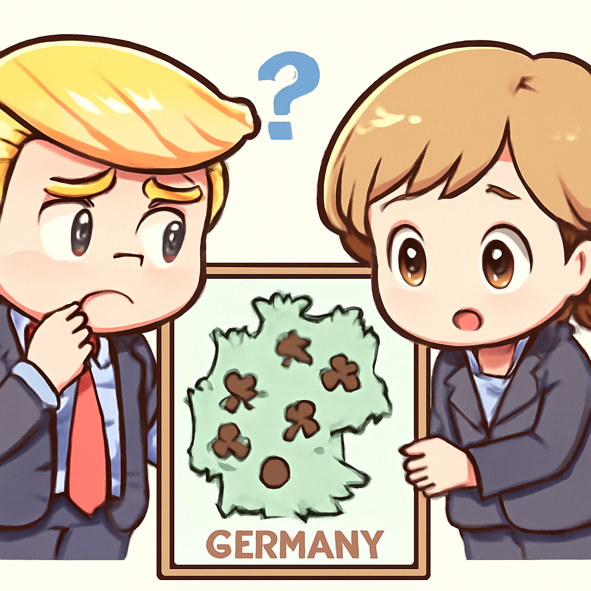

其一 · 以色列南黎巴嫩 · 停火期間空襲致死
以色列對南黎巴嫩空襲，造成九人死傷
在黎巴嫩南部，以色列軍方進行空襲，導致至少九人死亡，包括兩名兒童。這次襲擊發生在停火期間，讓人無法理解這場衝突何時才能停火。這不禁讓人想問：是不是在玩「火」呢？
🔗 原始新聞 ↗
2026-05-01 · 以古觀今，以笑抗愁
以色列對南黎巴嫩空襲，造成九人死傷
在黎巴嫩南部，以色列軍方進行空襲，導致至少九人死亡，包括兩名兒童。這次襲擊發生在停火期間，讓人無法理解這場衝突何時才能停火。這不禁讓人想問：是不是在玩「火」呢？
🔗 原始新聞 ↗
美國國會通過預算，暫時避免政府關門
美國國會最新通過了一項預算法案，讓聯邦政府的運作得以繼續，避免了長期的政府關門。雖然這次的預算不包括移民執法機構的資金，但至少對某些人來說，心裡的石頭總算放下了。希望這樣的和諧能持久，別再來一出「關門大吉」。
🔗 原始新聞 ↗
昂山素季從監獄轉至軟禁中
緬甸前領袖昂山素季近日被轉移至軟禁，這位諾貝爾和平獎得主自2021年軍事政變以來一直被拘留。這次轉移讓人不禁思考，這位女領袖的未來究竟何去何從？不過，至少她可以享受「家」的感覺，雖然這家並不太友善。
🔗 原始新聞 ↗
伊朗最高領袖計劃維持霍爾木茲海峽控制權

伊朗最高領袖哈梅內伊近日表示，將繼續對霍爾木茲海峽的控制，並計劃建立新的法律框架。這一消息引發國際社會關注，因為該海峽是全球石油運輸的重要通道。看來，伊朗在這場地緣政治棋局中，依然不打算退讓。
🔗 原始新聞 ↗
特朗普提議減少美軍在德國的駐軍

特朗普近日表示，美國正在考慮減少在德國的駐軍，這一消息引發德國政壇的熱議。隨著美德雙方的關係變得微妙，特朗普的言論讓人不禁想問：這是美國的策略轉變，還是單純的嘴炮？
🔗 原始新聞 ↗